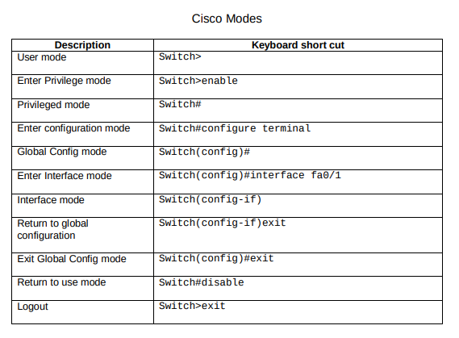
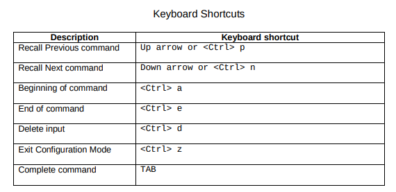
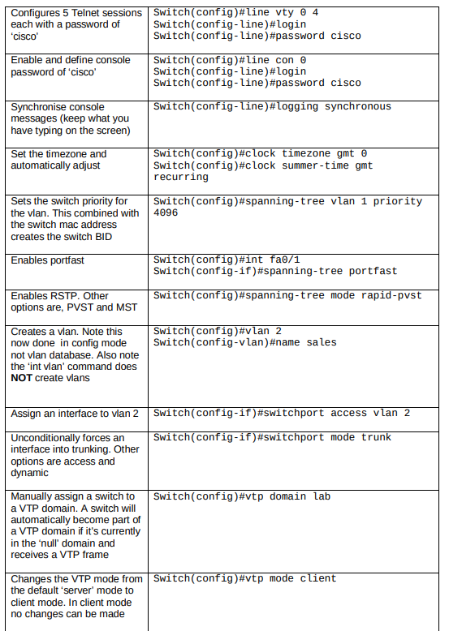
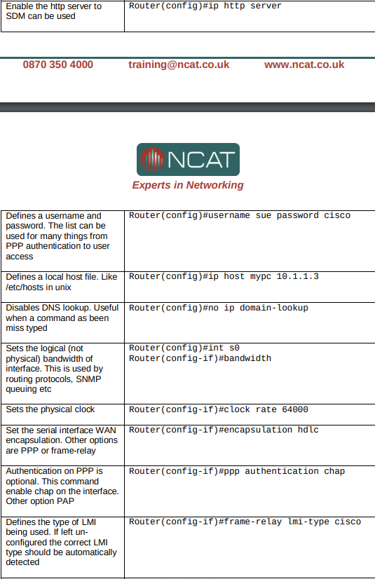
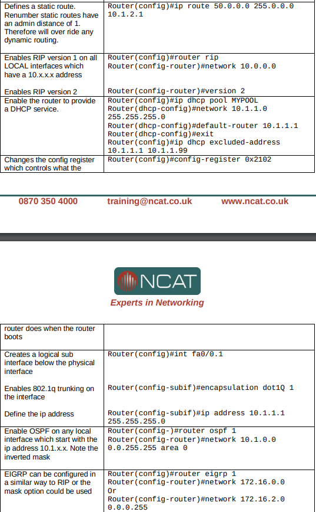
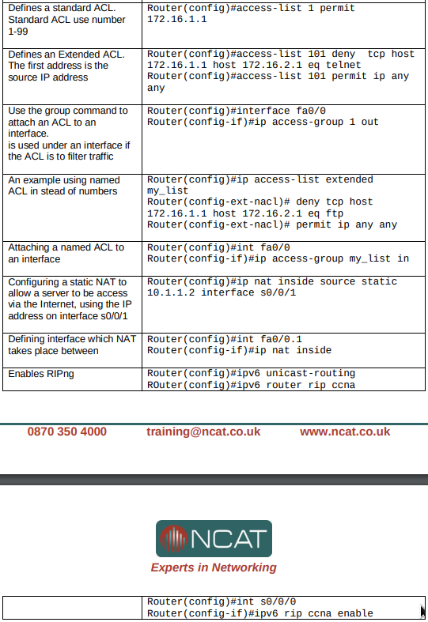
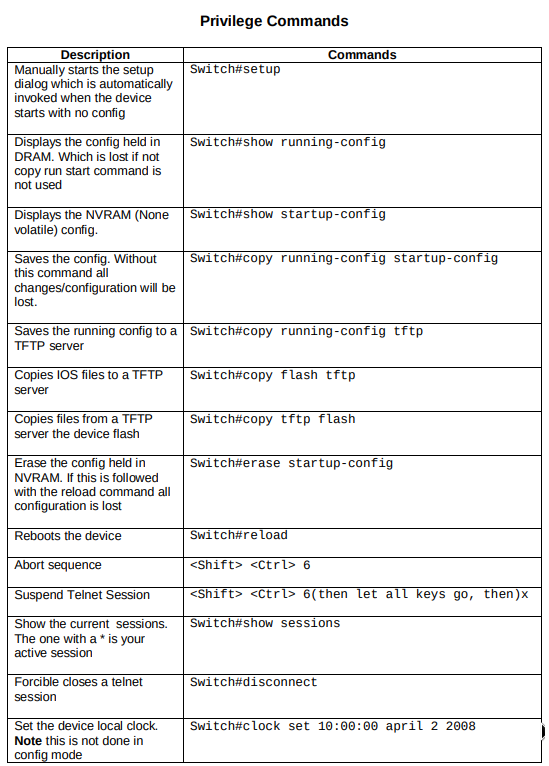

Cisco Modes
Keyboard Shortcuts
Device Configuration
Switch


Router


The following guidelines are commands and their descriptions:
Configure Networking
The following includes basic configure networking commands and their descriptions:
Enter interface configuration mode:
(config)# interface g1/0
Human-readable link description:
(config-if)# description Link to Some host
Add IPv4 address to interface:
(config-if)# ip address 10.23.42.5 255.255.0.0
Add IPv6 address to interface:
(config-if)# ipv6 address 2001:41d0:8:e115::ccc/64
Add IPv4 address to interface:
(config-if)# ip address 10.23.42.5 255.255.0.0
Add IPv6 address to interface:
(config-if)# ipv6 address 2001:41d0:8:e115::ccc/64
Overwrite MAC address:
(config-if)# mac address 1234.5678.90AB
Remove MAC overwrite:
(config-if)# no mac address
Add IPv6 address based on MAC to interface:
(config-if)# ipv6 address 2001:41d0:8:e115::/64 eui-64
Get IPv4 address via dhcp:
(config-if)# ip address dhcp
Get IPv6 address (and default route) via autoconfig:
(config-if)# ipv6 address autoconfig [default]
Set hostname transmitted as dhcp client to SW2:
(config-if)# ip dhcp client client-id asccii SW2
Configure both interfaces at once:
(config)# interface g1/0 - 2
En- or Disable interface. Often shutdown is the default:
(config-if)# [no] shutdown
Set 10.23.42.1 as the default gateway:
(config)# ip default-gateway 10.23.42.1
Add static route via next hop or interface:
(config)# ip route 10.20.30.0 255.255.255.0 {1.2.3.4,e0/0} [ad]
You can also set both:
(config)# ipv6 route 2001:41d0:8:e115::/64 [g1/1] [next hop]
Create a static host entry on this device:
(config)# ip host the-space.agency 178.32.222.21
Globally enable ipv6 routing:
(config)# ipv6 unicast-routing
Privilege Commands
Basic Network Troubleshooting
Show interfaces mac, bandwidth, mtu, packet stats, etc.: # show interfaces [if-name]
Show routes and how they were learned: # show ip[v6] route [static]
Show interfaces ip/arp/icmp/nd... configuration: # show ip[v6] interface [if-name]
Only show ip, status, and operational status: # show ip[v6] interface brief [if-name]
Similar to show ip int brief, w/ cidr, w/o ok/method: # show protocols [if-name]
Show the MAC address table of a switch: # show mac-address-table
Clear the dynamically learned mac address table entries: # clear mac address-table [dynamic]
Show {ip,ipx,appletalk}-mac bindings: # show arp
Show ip-mac bindings: # show ip arp [{ip, mac, if-name}]
Remove arp entry for ip: # clear [ip] arp 192.168.1.1
Show debug messages when receiving/sending arp packets: # debug arp
Disable all previously enabled debugs: # undebug all
Show neighbor discovery table cache: # show ipv6 neighbors
Troubleshoot Networks with Span
Define SPAN #23 output as g1/2: (config)# monitor session 23 destination interface g1/2
Define SPAN #23 input as g1/1: (config)# monitor session 23 source interface g1/1 {rx,tx,both}
Show all configured SPANs: # show monitor
Port Security
En/Disable port-security: (config-if)# [no] switchport port-security
Number of allowed MACs: (config-if)# switchport port-security maximum 1
Manually allow a MAC on this port: (config-if)# switchport port-security mac-address 1234.5678.9abc
Allow learning of connected macs until mac reached: (config-if)# switchport port-security mac-address sticky
Shutdown port when another device gets connected: (config-if)# switchport port-security violation shutdown
Re-enable if after port-security violation: (config-if)# shutdown (config-if)# no shutdown
Re-enable if automatically after the problem is fixed: (config)# errdisable recovery cause psecure-violation
Re-check every 42 seconds (min 30, default 300): (config)# errdisable recovery interval 42
Port security terms of violation:
- Protect: drops packets, no alerts
- Restrict: drops packets, security violation count
- Shutdown: shuts down the port (default)
Troubleshooting Port Security
Port status, violation mode, max/total MACs and more: # show port-security [interface g1/1]
Secure MACs on ports: # show port-security address
Check if auto-recovery is enabled (disabled by default): # show errdisable recovery
Layer2 Switch Vlan Config
[delete vlan or] create vlan and enter config-vlan mode: (config)# [no] vlan 23
Name this vlan TelephoneSanitizer: (config-vlan)# name TelephoneSanitizer
Make frames out this port untagged: (config-if)# switchport mode access
Make frames out this port tagged by default: (config-if)# switchport mode trunk
Sometimes the default is ciscos old isl: (config-if)# switchport trunk encapsulation dot1q
Except for vlan 256, which remains untagged: (config-if)# switchport trunk native vlan 256
Layer3 Switch Vlan Config
Enter interface config mode: (config)# interface vlan 23
Set device ip in vlan 23: (config-if)# ip address 1.2.3.4 255.255.255.0
Virtual interfaces are disabled by default: (config-if)# no shutdown
Delete vlan 23: (config)# no vlan 23
Router (on a Stick) Vlan Config
Create subinterface g1/1.10 on g1/1: (config)# interface g1/1.10
Enable ieee 802.1Q vlan tagging with vlan 10 on the subinterface: (config-subif)# encapsulation dot1q 10
Show vlans and their trunk interfaces: # show vlans
Troubleshoot Vlans on a Switch
Show vlan settings for all switch ports: # show vlan [{id 23, name TelephoneSanitizer}] [brief]
Verify mode and vlan of g1/1: # show interfaces g1/1 switchport
Show trunk settings and state: # show interfaces g1/1 trunk
Quick way to search the running config: # show run interface vlan 1
Show trunk mode / access vlan: # show interface status
Show current DTP mode for g1/1: # show dtp interface g1/1
STP
Spanning Tree Protocol (STP) (802.1D) blocks ports that have repetitive links in order to prevent layer 2 loops and broadcast storms.
Make this device the primary/secondary root bridge: (config)# spanning-tree vlan 1 root {primary, secondary}
Enable bpdu guard for all portfast enable interfaces: (config)# spanning-tree portfast bpduguard default
Enable portfast for all non-trunk interfaces: (config)# spanning-tree portfast default
Enable gpduguard on this interface: (config-if)# spanning-tree bpduguard enable
Enable portfast on this interface: (config-if)# spanning-tree portfast
Enable root guard on this interface: (config-if)# spanning-tree guard root
Troubleshoot STP
Who's the root and how do I get there? # show spanning-tree [vlan 1]
Is global portfast/bpduguard configured? # show spanning-tree summary
Is portfast/bpduguard configured on this interface? # show running-config interface g1/1
Is portfast active on this interface? # show spanning-tree interface g1/1 portfast
Etherchannel (Link Aggregation)
Configure g1/1 and g1/2 at the same time: (config)# interface range g1/1 - 2
Add both interfaces to etherchannel 1 (PAgP): (config-if-range)# channel-group 1 mode {auto, desirable}
Add both interfaces to etherchannel 1 (LACP): (config-if-range)# channel-group 1 mode {active, passive}
Add both interfaces to etherchannel 1 (Static): (config-if-range)# channel-group 1 mode on
Configure virtual interface for etherchannel 1: (config)# interface port-channel 1
Put etherchannel 1 in trunk mode: (config-if)# switchport mode trunk
Add tagged vlans 10,20,30 on etherchannel 1: (config-if)# switchport trunk allowed vlan 10,20,30
Troubleshoot Etherchannel (Link Aggregation)
Includes the combined bandwidth and members as extra info: # show interface port-channel 1
Show etherchannel protocols and members as a list: # show etherchannel summary
Show per member state and stats: # show etherchannel port-channel 1
Configure a Serial
Layer 1 link speed is ordered by a CSU/DSU, in a lab without an external CSU/DSU and using a DTE (Data Termianl Equipment) cable and DCE (Data Communications Equipment) cable.
Set clock rate on DCE router side to 128 kbps: (config-if)# clock rate 128000
Verify clock rate for serial interface 1/0: (config)# show controllers serial 1/0
ACLs
Create ACL #23 or append a rule to ACL #23, allow 1.2.x.x: (config)# access-list 23 permit 1.2.3.4 [0.0.255.255]
Delete entire ACL #23: (config)# no access-list 23
Renumber ACL Rules, put first on #5, increment by 10: (config)# ip[v6] access-list resequence local_only 5 10
Create ACL and/or enter config mode for ACL #23: (config)# ip access-list {standard, extended} 23
Create ACL and/or enter config mode for ACL 'local_only': (config)# ip access-list {standard, extended} local_only
Append rule to standard ACL 'local_only': (config-std-nac1)# permit 10.20.30.0 0.0.0.255
Append rule to ACL at sequence number 5: (config-std-nac1)# 5 permit 10.20.30.0 0.0.0.255
Remove rule with sequence# from ACL: (config-std-nac1)# no <sequence#>
Interface ACLs
Enter if-config mode for g1/1: (config)# inter g1/1
Apply ACL #23 to outgoing packets, not send by the router: (config-if)# ip access-group 23 out
Apply ACL #42 to incoming packets: (config-if)# ip access-group 42 in
Overwrite the used ACL, only one ACL per if + proto + direction!: (config-if)# ip access-group local_only in
The v6 syntax of course differs...: (config-if)# ipv6 traffic-filter 23 out
Show ACLs on g1/1 (When none set shows not set for v4 and nothing for v6): # show ip interface g1/1 | incl access list
Troubleshooting ACLs
Show all configured ACLs: # show [ip[v6]] access-lists
Display all rules in ACL #10 and how often they matched: # show access-list 10
NAT
Local addresses are inside the network. Global addresses are outside the network.
- Inside local: IP address assigned to a host inside the newtork, non-routable
- Inside global: IP address assigned by Network Information Center or ISP, routable
- Outside local: IP address of a remote host as it appears inside the network, non-routable
- Outside global: IP address of a remote host assigned by the host owner, routable
Enter if-config mode for g1/1: (config)# int g1/1
Configure 1.2.3.4/28 on g1/1: (config-if)# ip address 1.2.3.4 255.255.255.240
Packets going out, need to change their src, incoming their dest ip: (config-if)# ip nat outside
Enter if-config mode for g1/2: (config)# int g1/2
Configure 10.10.23.1/24 on g1/2: (config-if)# ip address 10.10.23.1 255.255.255.0
Packets going out, need to change their dest, incoming their src ip: (config-if)# ip nat inside
SNAT
SNAT - statically map an internal ip 1:1 to an external ip: (config)# ip nat inside source static 10.10.23.2 1.2.3.5
DNAT
Create an ACL identifying 10.10.23/24: (config)# access-list 42 permit 10.10.23.0 0.0.0.255
Create an IP Address Pool for NATing: (config)# ip nat pool POOL 1.2.3.5 1.2.3.10 netmask 255.255.255.240
DNAT IPs matching ACL #42 1:1 with IPs from nat pool 'POOL': (config)# ip nat inside source list 42 pool POOL
PAT
Create an ACL identifying 10.10/16: (config)# access-list 10 permit 10.10.0.0 0.0.255.255
PAT IPs matching ACL #10 many:1 with g1/1s public IP: (config)# ip nat inside source list 10 interface g1/1 overload
Troubleshooting NAT
Show nat table entries if any: # show ip nat translations
Show translations are actually used and interfaces are marked in/out correctly: # show ip nat statistics
Clear dynamic translations. Doesn't mess with SNAT!: # clear ip nat translation {ip, *}
DHCP Server
Don't distribute these IPs in leases: (config)# ip dhcp excluded-address 10.30.4.1 10.30.4.100
Create and/or enter dhcp config for pool 'PCs': (config)# ip dhcp pool PCs
Define pool addresses: (dhcp-config)# network 10.30.4.0 /24
Define default-gateway to be distributed in the leases: (dhcp-config)# default-router 10.2.1.1
Lease validity time: (dhcp-config)# lease
Enter interface config mode on client-facing interface: (config)# int g1/1
Relay DHCP Requests to this host: (config-if)# ip helper-address 192.168.1.1
Troubleshooting DHCP
Show dhcp lease information: # show dhcp lease
Show pool size and addresses in use: # show ip dhcp pool
Show which mac got which ip: # show ip dhcp binding
See if ip dhcp exclude-address / pool stuff is wrong: # sh run | section dhcp
See if ip helper-address is wrong: # sh run int g1/1
HSRP
Join HSRP Group: (config-if)# standby [group-number] ip
(optional) Set prio of this router: (config-if)# standby [group-number] priority
(optional) Preempt other routers when this router becomes active: (config-if)# standby [group-number] preempt
(optional) Set HSRP Version: (config-if)# standby {1,2}
Troubleshooting HSRP
HSRP Groups, their VIPs, state, active router, standby router, preemption: # show standby
SLAs
HSRP Groups, their VIPs, state, active router, standby router, preemption: # show standby
Define icmp-echo test: (config-ip-sla)# icmp-echo 1.2.3.4
Frequency in seconds: (config-ip-sla)# frequency 42
Start test #23 now and until manually stopped: (config)# ip sla schedule 23 life {forever, seconds} start-time now
Troubleshooting SLAs
Show all configured ip sla configs: # show ip sla configuration
Device Management
Set hostname to R1:
(config)# hostname R1
Set enable password:
(config)# enable password
Same but with hashing:
(config)# enable secret
Very weak encryption of passwords:
(config)# service password-encryption
Copy something from flash to tftp. Wizard asks for details. It works both ways:
# copy flash0: tftp:
# copy running-config startup-config:
# write
# erase startup-config:
# write erase
Restart the device and load the startup-config:
# reload
Copy running-config to a tftp server. (interactive):
# copy running-config tftp:
Merge source config into the running config:
# copy running-config
Initial configuration dialog:
# setup
ios, bootloader and hardware infos, uptime, configuration register:
# show version
Firmware Management
Boot filename.bin from flash memory:
(config)# boot system flash:filename.bin
Boot filename.bin from tftp:
(config)# boot system tftp://10.20.30.40/filename.bin
Boot ROM monitor as a backup:
(config)# boot system rom
Set the 16bit Configuration Register value used after reboot:
(config)# config-register 0x2342
Lists available file systems:
# show file systems
List fs content and free space:
# show flash0:
License Management
Save a copy of all licenses:
# license save flash:licenses.lic
Install a license:
# license install flash0:license.xml
Activate evaluation right-to-use license:
(config)# license boot module technology-package
Reboot to activate the package and right to use license:
# reload
Deactivate a technology-package:
(config)# license boot module technology-package disable
Reboot without that technology-package:
# reload
Remove license from the license storage:
# license clear
Remove the no longer needed line from the config:
(config)# no license boot module technology-package disable
Active licenses:
# show licenses
Technology pack and feature licenses supported:
# show license feature
Product id and serial number needed to order licenses:
# show license udi
Reset Password
Show the configuration register in rom monitor:
> confreq
Set the configuration register in rom monitor to not load startup-conf:
> confreq 0x2142
Reboot in rom monitor:
> reset
Overwrite forgotten password:
(config)# enable secret foobar
Do load startup-config after boot again:
(config)# config-register 0x2102
Telnet / Console
Make sure to include legal terms to sound smart:
(config)# banner login "Insert snarky banner."
Set Login Banner:
(config)# banner motd "Insert snarky banner."
Enter config mode for vty 0 to 4 (up to 15 allowed):
(config)# line vty 0 4
Enter config mode for the console port:
(config)# line console 0
Require login on telnet/console connection:
(config-line)# login
Enable Telnet and set vty login password:
(config-line)# password
Set ACL to limit inbound IPs allowed to access vty:
(config-line)# access-class 10 in
Overwrite the used ACL, only one ACL per vty + direction!:
(config-line)# access-class 42 in
Autologout after 10 Minutes:
(config-line)# exec-timeout 10
Require login on telnet/console connection via local users:
(config-line)# login local
Create local user with encrypted password:
(config)# username h.acker secret C1sco123
SSH
Required to generate SSH keys:
(config)# hostname Fooba
Required to generate SSH keys:
(config)# ip domain-name example.com
Generate keys like it's 1995! Potentially takes forever:
(config)# crypto key generate rsa modulus 2048
Force SSHv2:
(config)# ip ssh version 2
Force ssh, disable telnet:
(config-line)# transport input ssh
SSH version, timeout time, auth retries:
# show ip ssh
List of active connections:
# show ssh
Clock
Show time and date:
# show clock
Update clock:
(config)# clock set 23:50:42 10 Jan 2017
Update timezone to EST:
(config)# clock timezone EST 0
Configure upstream ntp server:
(config)# ntp server 10.20.30.40
Enable ntp server:
(config)# ntp master [stratum]
ntp connections:
# show ntp associations
Disable Unused Services
Show open ports:
# show control-plane host open-ports
Stop the http server (but not https):
(config)# no ip http server
Stop CDP:
(config)# no cdp enable
Radius
Local backup user:
(config)# username password
Enable aaa services:
(config)# aaa new-model
Add and define Radius conf:
(config)# radius server
Use this hostname/ip of server:
(config-radius-server)# address ipv4 [auth-port ]
Radius PSK:
(config-radius-server)# key
Create authentication group:
(config)# aaa group server radius
Using the radius config:
(config-sg-radius)# server name
Allow that group and local users in:
(config)# aaa authentication login group local
TACACS+
Local backup user:
(config)# username password
Enable aaa services:
(config)# aaa new-model
Add and define TACACS conf:
(config)# tacacs server
Multiple possible:
(config)# aaa group server tacacs+
Allow that group and local users in:
(config)# aaa authentication login group local
Syslog
Log to this syslog server (name or ip):
# logging 10.20.30.40
Only log messages with min. informational sev:
# logging trap informational
SNMP
Contact email:
(config)# snmp-server contact admin@example.com
Where is the device:
(config)# snmp-server location RZ-Hamburg
Add community:
(config)# snmp-server community [ro, rw]
SNMP notifications recipient:
(config)# snmp-server host 10.20.30.4
CDP - Cisco Discovery Protocol
Enables cdp globaly and on all interfaces (default):
# [no] cdp run
Enable cdp on an interface:
# (config-if)# [no] cdp enable
List connected cisco devices (name, local/remote port, [ip] ..):
# show cdp neighbors [detail]
LLDP - Link Layer Discovery Protocol
Enables lldp globaly and on all interfaces:
# [no] lldp run
Enable lldp packet transmission on interface:
(config-if)# [no] lldp transmit
Enable lldp packet reception on interace:
(config-if)# [no] lddp receive
PPP
Create users for pap auth:
(config)# username fnord password pass
Baud rate. Only on DCE cable:
(config-if)# clock rate 125000
Logical speed used for routing cost calc, RSVP:
(config-if)# bandwidth 125
Default is HDLC:
(config-if)# encapsulation ppp
Require remote to authenticate via pap:
(config-if)# ppp authentication pap
Authenticate to remote pap:
(config-if)# ppp pap sent-username fnord password pass
Required for CHAP, used as chap client username:
(config)# hostname routy1
Create users for chap auth for routy2:
(config)# username routy2 password foobar
Remove in favor of chap:
(config-if)# no ppp authentication pap
Remove in favor of chap:
(config-if)# no ppp pap sent-username fnord password pass
Require remote to authenticate via chap:
(config-if)# ppp authentication chap